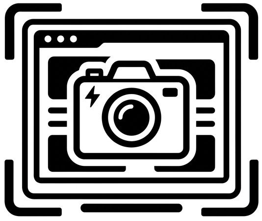

Captio
Capture d'écran
État de l'extension
…
…
Activation de l'extension
Fonctionnalité de capture
Le bouton capture la partie visible de l'onglet actif. La capture n'est ni affichée, ni enregistrée sur votre poste.

Capture d'écran
…
…
Le bouton capture la partie visible de l'onglet actif. La capture n'est ni affichée, ni enregistrée sur votre poste.